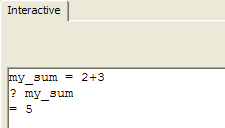
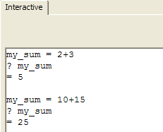
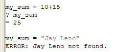

Programming Concepts
Programming with Xbasic means you must understand the definitions and characteristics of some specific terms and concepts. You have already seen what an Xbasic command is. And you have been introduced to some simple arithmetic expressions, which are valid Xbasic commands themselves.
|
Another term for an Xbasic command is an instruction. The command instructs Alpha Five on what to do next. |
Another important concept is a variable. A variable is a storage area or location in your computer's memory. You may be familiar with memory locations in most calculators. They are often labeled M1, M2, and M3 and they enable you to store intermediate results that you can then recall and use in further calculations later.
|
A variable is a location in memory that Alpha Five uses to store and recall data values. Variables are named by you. Consult Declaring a Variable for variable naming rules. Some valid variable names are: my_last_contact sum1 interest_paid_on x warranty_in_effectDifferent variables can store different types of data. So the variables above may hold these kinds of data. Other variable types are Blob, Time, Pointer (Object Reference), Image, and Function.
|
An Xbasic variable is like those calculator memory areas. However, there are important differences. In Alpha Five you can define as many variables as you need, within the limits of your computers memory capacity, and you decide on the name of the variables yourself.
In addition, a variable can store different types of information. In a calculator, all the values stored in a memory location are numbers. In Alpha Five, you can create variables to hold character, date, logical, and pointer values, among others, as well.
Variables are similar to fields in a database table. Both of them are storage areas for data. And both of them store data of a certain type. Variables, however, only hold their data while Alpha Five is running. When your application closes, any variable values used in that application are discarded. The variable placeholder is still there, but any values stored in that variable are not. However, you can explicitly use Xbasic commands to save variable data values to a file and restore those values during another session, if necessary.
But variables are primarily used to store data that is used during an applications processing, but do not need to be kept in permanent storage. For example, you may add a variable to a form which is used to search your database. When the form is loaded, your user enters the data they are searching for into the variable. That data is used to locate the appropriate record. When the form is closed, the variable is also closed and any value (the last data searched for) in the variable is discarded.
Exercise 3 - Defining and using variables in the Interactive Window
Type in the Interactive window:
Now type:
Now type:
Now type:
To check, type:
|
my_sum = 2+3 |
When you press Enter, Alpha Five moves the cursor to the next line but nothing prints.
Instead you created a variable named my_sum that is assigned (or stores) the sum of the right hand side of the expression (2+3). (The right hand side of the expression refers to the part of the line to the right of the equals (=) sign.)
Alpha Five verifies that the command you typed is valid.
|
my_sum = 2+3 ? my_sum |
When you type ? my_sum and press Enter, Alpha Five displays the value stored in the my_sum variable. This value is 5.

Figure 16
|
my_sum = 10 + 15 ? my_sum |
Now Alpha Five displays this:

Figure 17
The value stored in the my_sum variable has changed. Now my_sum holds the value 25.
|
my_sum = my_sum + 100 |
Can you guess what the value stored in my_sum is now? If you think its 125, you are right!
|
? my_sum |
Alpha Five Xbasic expressions are evaluated from right to left. This means that when Alpha Five evaluates the expression you typed in step 3, the right hand side of the expression is calculated first. At this moment, while the right hand side of the expression is being evaluated, my_sum holds the value you gave it in step 2 (i.e., 25). So Alpha Five adds 25 plus 100. Now Alpha Five proceeds with the rest of the expression which says to assign (store) the value from the right side of the expression to the variable my_sum. So my_sum' s value (25) is replaced with the new value (125). Now the my_sum variable stores the value 125.
|
Variables are so-named because the data they hold (store) can change or vary. In this step, you changed the value stored in the variable my_sum from 5 to 25. |
Can you guess the type of the variable my_sum ?
|
A variable's type refers to the kind of data that a variable can store. |
In Step 1, you assigned a sum to a new variable named my_sum. You assigned a numeric sum (yes, there are other kinds) to my_sum. So, implicitly, you told Alpha Five what kind of data the new variable will store by the type of data that you first put in that variable. This kind of variable definition is called an implicit declaration of a variables type. Alpha Five figures out the variables type from the type of the data you initially put in the variable. There is also a method of explicit ly defining a variables type which we will see below.
|
An implicit declaration of a variable's type is done by assigning a value to that variable. Whatever kind of value is assigned becomes that variable's type. An explicit declaration is done with an Xbasic command named DIM which we will see below. |
Once a variable has been typed (and a variable is always typed either implicitly or explicitly when you create it), then you can only assign future values of the same type to that variable.
If you type this in the Interactive window:
|
? my_sum = "Jay Leno" |
Alpha Five displays an error message: "Jay Leno not found". You tried to assign a character type value to a variable that can only hold a numeric type value. The types of the value and the variable do not match and Alpha Five reports an error. In addition, the my_sum variable now holds 0. When Alpha Five found that it could not store a character value into my_sum, it cleared any previous value.

Figure 18
The Xbasic TYPEOF() function provides an easy way to determine the type of a variable.
|
A function is a special type of Xbasic command. A function calculates or transforms information and returns a value. Typically, a function will take some information in (as parameters), manipulate that information in some way and then return a result or final value. For example, there is an Xbasic function DMY(date) that returns a formatted date. The formal definition of this function (found in the Xbasic Reference manual) is: Character String = DMY(Date) This means you supply DMY with a date value the Date input parameter and it will return a character string. If you type: ? DMY ({08/01/2002}) in the Interactive Window, the DMY function will return (and Alpha Five will display) the value: 01 August 2002
|
In the Interactive window type:
|
? typeof(my_sum) |
Alpha Five displays:
|
="N" |
which indicates the type of the my_sum variable is numeric.
It is not possible to change the type of a variable once it has been established. You can however delete the variable from Alpha Fives memory and then use the name again and create a new variable with a different type.
Next
Variable Types, Variable Data Types and Scope